Quick Reference
Travelers: Tiffany Bediner, 20; Collin Bediner, 14
Trip dates: Travel starts Thursday, June 25, 2026; arrive London Friday morning, June 26; depart London Monday, June 29.
Hotel: Holiday Inn Express London - Victoria
Address: 106-110 Belgrave Road, London SW1V 2BJ, United Kingdom
Phone: +44 20 7630 8888
Nearest Tube: Pimlico
Main nearby hub: Victoria Station
UK emergency number: 999
Parent contacts:
Parent 1: ____________________
Parent 2: ____________________
Save the hotel in Uber and Google Maps before leaving home. Use Uber or FREENOW when tired; use only Uber, FREENOW, or an official black cab.
Copy / Paste Hotel Address
To Do Before Travel
To Bring
Ticket Wallet
Keep screenshots saved on both phones, plus printed copies for the most important items.
Transportation Tips
Use the Tube for most daytime travel. Each person needs their own contactless card, phone, or Oyster card. Use the same device to tap in and tap out. Do not tap in with a phone and tap out with an Apple Watch or a different card.
Keep phone battery charged. Use TfL Go and Google Maps to confirm routes each morning.
Use Uber or a black cab at night if tired. Uber is usually cheaper. A black cab may feel easier and more official if one is available. FREENOW can book black cabs.
Never accept rides from anyone offering a car on the street. Use only Uber, FREENOW, or an official black cab with a TAXI light.
Night 1 rule: Do not take the Tube back on Night 1. Take Uber directly to the hotel. If Uber is too expensive, confusing, or pickup looks difficult, use FREENOW or an official black cab.
Apps To Have
- Google Maps
- TfL Go
- Uber
- FREENOW
- JetBlue app
- TripIt
Safety and Common Sense
Stay together. Stay on main streets and main walking routes. Keep phones zipped away when not actively using them. Use Uber or black cab if tired or if it feels late. Do not accept rides from strangers. Message parents when leaving the hotel, arriving at major stops, and heading back. Carry passport copies, not passports, during daily sightseeing unless otherwise needed. Use the hotel address if you ever need help getting back.
Food Strategy
Do not over-plan restaurants. Most meals should be casual walk-in areas so the day can flex around weather, energy, and crowds.
- Near hotel: Tachbrook Street / Warwick Way for easy food near the hotel.
- Day 1 dinner: Southbank Centre / Royal Festival Hall for casual walk-in options.
- Day 2 lunch: Borough Market. Walk around first, then choose.
- West End: Chinatown, Soho, Covent Garden, and Seven Dials for casual dinner, snacks, and dessert.
- Day 3 lunch: Camden Market for street food and snacks.
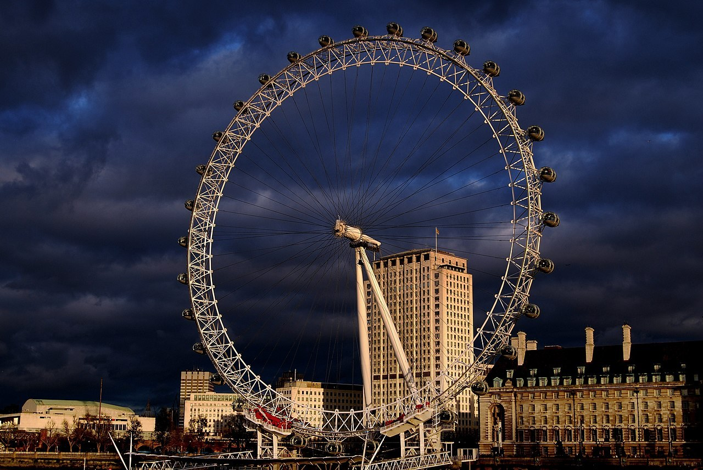
Day 1 - Friday, June 26
Victoria, Westminster and South Bank
-
1
Eat near the hotel
Walk to Tachbrook Street / Warwick Way for an easy cafe or casual restaurant.
Tachbrook Street MarketOpen in Google Maps -
2
Start the bus loop
Walk to the Victoria Station / Buckingham Palace Road entrance. Board the Hop-On / Hop-Off Big Bus that matches your ticket.
Victoria Station Buckingham Palace Road entranceOpen in Google Maps -
3
Sightseeing loop
Stay on the bus for the main sightseeing loop. You should pass Buckingham Palace / Green Park, Trafalgar Square / Piccadilly, Westminster / Big Ben, and London Eye / South Bank.
-
4
Westminster photos
Get off near London Eye / Westminster Bridge. Walk: London Eye -> Westminster Bridge -> Big Ben photos -> Parliament Square -> Westminster Abbey exterior -> back to London Eye.
London EyeOpen in Google Maps Westminster BridgeOpen in Google Maps Big BenOpen in Google Maps Parliament SquareOpen in Google Maps Westminster AbbeyOpen in Google Maps -
5
London Eye
Ride the London Eye. Aim for a timed ticket around 5:30 PM or 6:00 PM.
London EyeOpen in Google Maps -
6
Dinner and river walk
After the London Eye, walk along Queen's Walk. Eat around Southbank Centre / Royal Festival Hall. If you still have energy, continue toward Gabriel's Wharf or Oxo Tower.
Southbank Centre / Royal Festival HallOpen in Google Maps Gabriel's WharfOpen in Google Maps Oxo TowerOpen in Google Maps -
7
Go home
Take an Uber directly back to the hotel. Night 1 return is Uber or black cab, not the Tube.
HotelOpen in Google Maps
Photo Spots
- Big Ben from Westminster Bridge
- London Eye from Westminster Bridge
- Queen's Walk river views
If You're Tired
If tired after the London Eye, skip the longer Queen's Walk and eat near Southbank Centre / Royal Festival Hall, then Uber directly back to the hotel.
Rain Plan
If raining, still do the London Eye if tickets are booked, then stay around Southbank Centre / Royal Festival Hall for food and indoor cover. Use Uber back to the hotel.
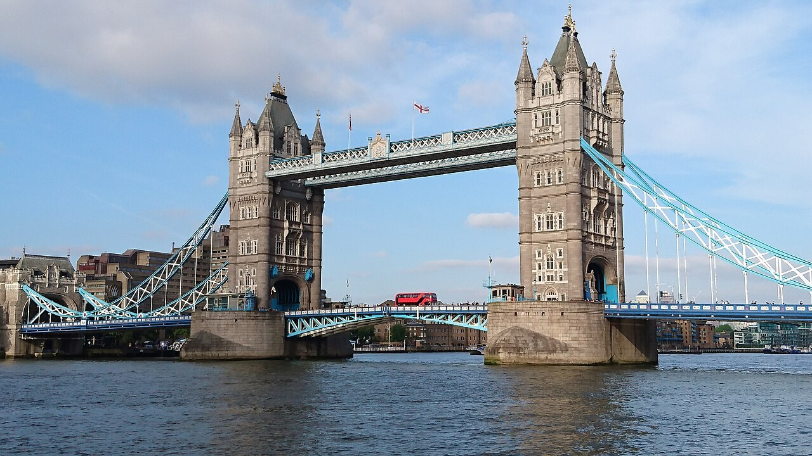
Day 2 - Saturday, June 27
Tower Bridge, Borough Market and West End Exploring
-
1
Breakfast
Start with breakfast at the hotel.
-
2
Tube to Tower Hill
Walk to Pimlico Station. Take Pimlico -> Victoria Station, change at Victoria, then Victoria -> Tower Hill Station. Confirm the easiest route that morning with TfL Go or Google Maps.
Pimlico StationOpen in Google Maps Tower Hill StationOpen in Google Maps -
3
Tower area
Walk around the Tower of London area. No need to buy tickets ahead: see it from the outside, take photos, and enjoy the area without committing to a long tour.
Tower of LondonOpen in Google Maps -
4
Tower Bridge
Walk to Tower Bridge, take photos outside, and walk across for the views. Only buy Tower Bridge tickets if you decide in the moment that you want to go inside.
Tower BridgeOpen in Google Maps -
5
Borough Market lunch
Walk from Tower Bridge along the south side of the Thames toward London Bridge / Borough Market. Saturday will be crowded, so walk around first and pick food casually.
Borough MarketOpen in Google Maps London Bridge Underground StationOpen in Google Maps -
6
West End exploring
Take the Northern line northbound from London Bridge to Leicester Square. Walk Leicester Square -> Covent Garden -> Seven Dials -> Neal's Yard -> Soho -> Carnaby Street -> Chinatown.
Leicester Square StationOpen in Google Maps Covent GardenOpen in Google Maps Seven DialsOpen in Google Maps Neal's YardOpen in Google Maps SohoOpen in Google Maps Carnaby StreetOpen in Google Maps ChinatownOpen in Google Maps -
7
Dinner and return
Dinner in Soho, Chinatown, or Covent Garden. Use the Tube if it is still early and comfortable; use Uber or black cab if tired, late, or pickup is easier.
HotelOpen in Google Maps
Photo Spots
- Tower Bridge from the south side of the Thames
- Neal's Yard colorful courtyard
- Chinatown gate
- Carnaby Street
If You're Tired
If tired after Borough Market, skip the full Soho / Carnaby Street walk and go straight to Covent Garden and Neal's Yard, then dinner.
Rain Plan
If raining, spend more time around Borough Market, Covent Garden, covered shops, cafes, and Chinatown. Use Tube or Uber between areas as needed.
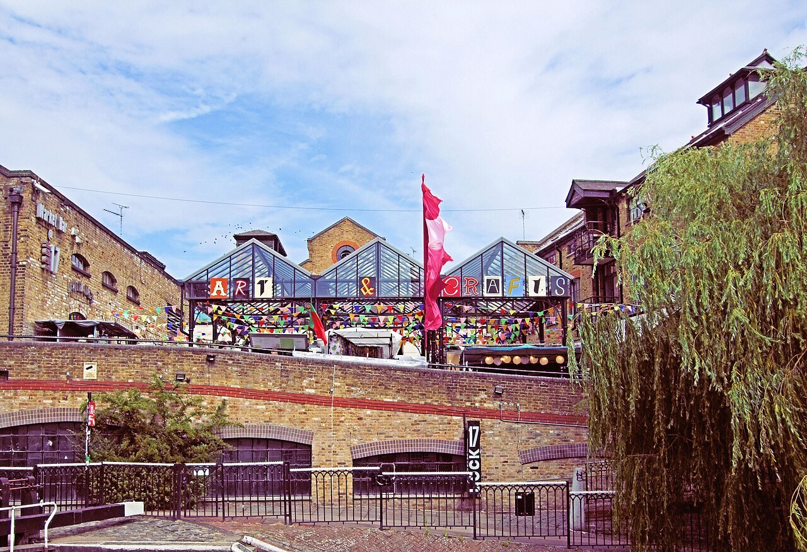
Day 3 - Sunday, June 28
Palace Morning and Camden Daytime Adventure
-
1
Breakfast
Start with breakfast at the hotel.
-
2
Palace photos
Walk or take short transit to Buckingham Palace. See the exterior and gates.
Buckingham PalaceOpen in Google Maps -
3
Park and Mall walk
Walk through St. James's Park, then walk The Mall toward Trafalgar Square.
-
4
Tube to Camden
From central London, take the Tube to Camden Town. Use Google Maps or TfL Go for the best route that morning.
Camden Town StationOpen in Google Maps -
5
Camden Market lunch
Make Camden Market the daytime anchor. Get lunch and explore the stalls, shops, signs, and street food.
Camden MarketOpen in Google Maps -
6
Regent's Canal if energy is good
If weather and energy are good, take a short Regent's Canal walk near Camden Lock. Keep it short and easy.
Regent's CanalOpen in Google Maps -
7
Final dinner
Return toward central London for final dinner in Covent Garden, Soho, or near the hotel. Use Uber or the Tube depending on timing and energy.
Photo Spots
- Buckingham Palace gates
- Camden Market signs
- Queen's Walk river views
If You're Tired
If tired, skip Regent's Canal and spend only 1 to 2 hours at Camden Market before returning toward the hotel.
Rain Plan
If raining, shorten the park walk and spend more time in Camden Market covered areas, cafes, and shops.
Departure Day: Monday, June 29
Keep this morning simple. Eat breakfast at the hotel if timing works, double-check passports and phones before leaving the room, and use the JetBlue app plus the flight confirmation for updates. Use the hotel address and saved ride apps if you need help coordinating pickup.
Photo Gallery and Sources
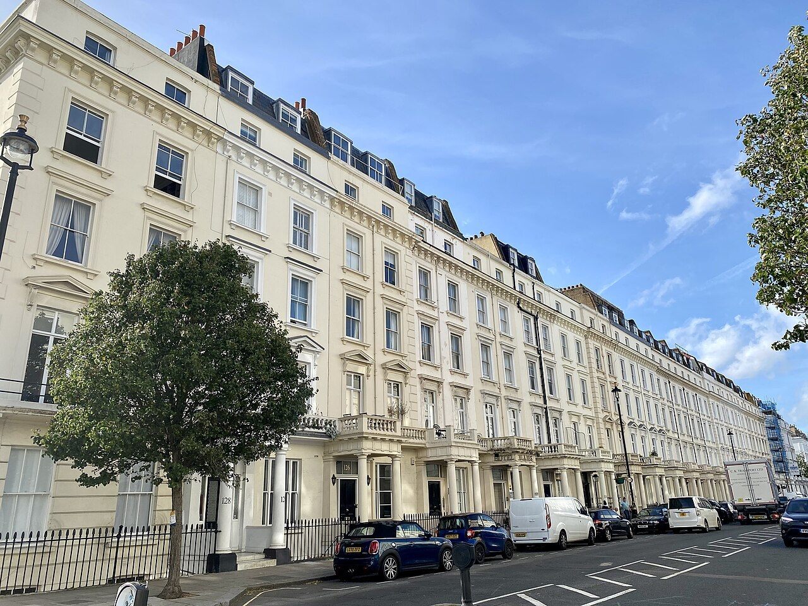
Wikimedia Commons image
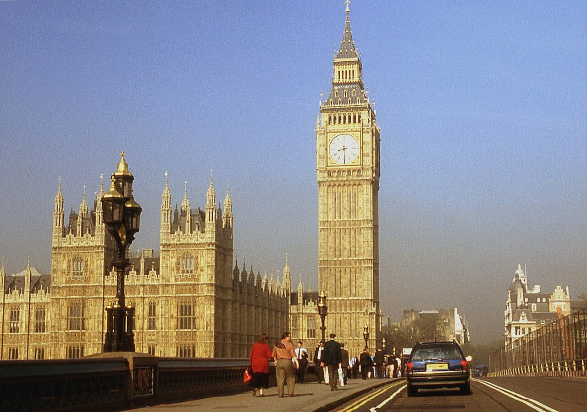
Wikimedia Commons image
Evans1551, public domain
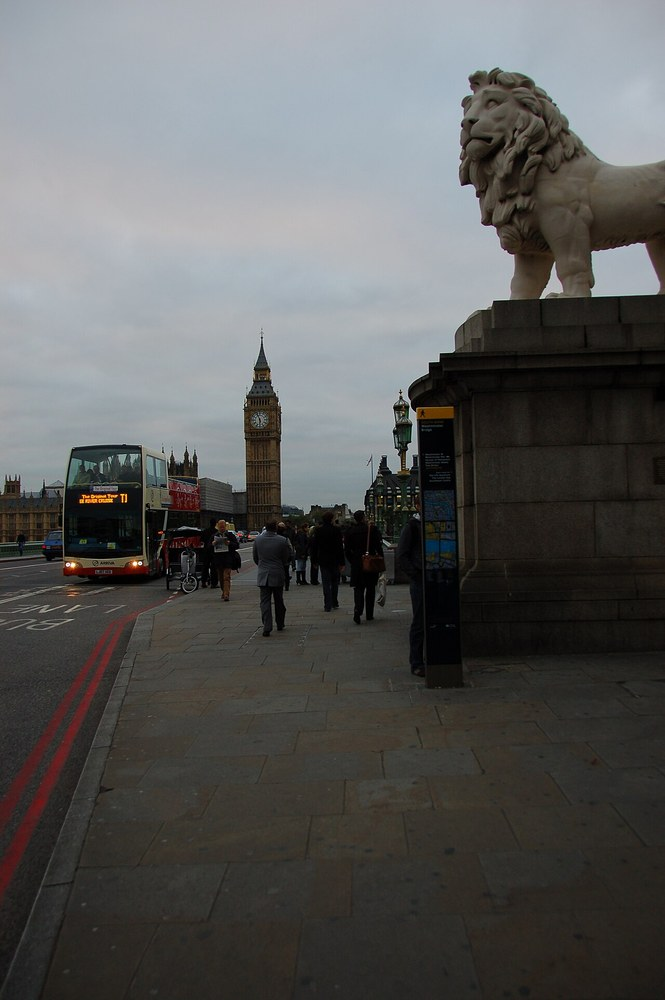
Ralf Roletschek, Wikimedia Commons license
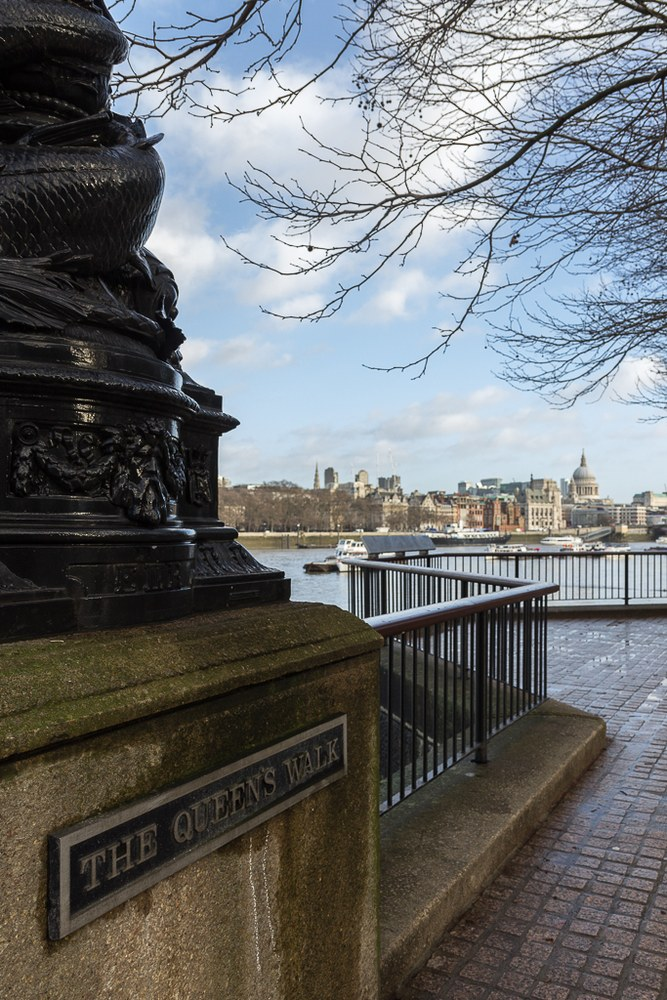
Wikimedia Commons image
Helen Ilus, Wikimedia Commons license
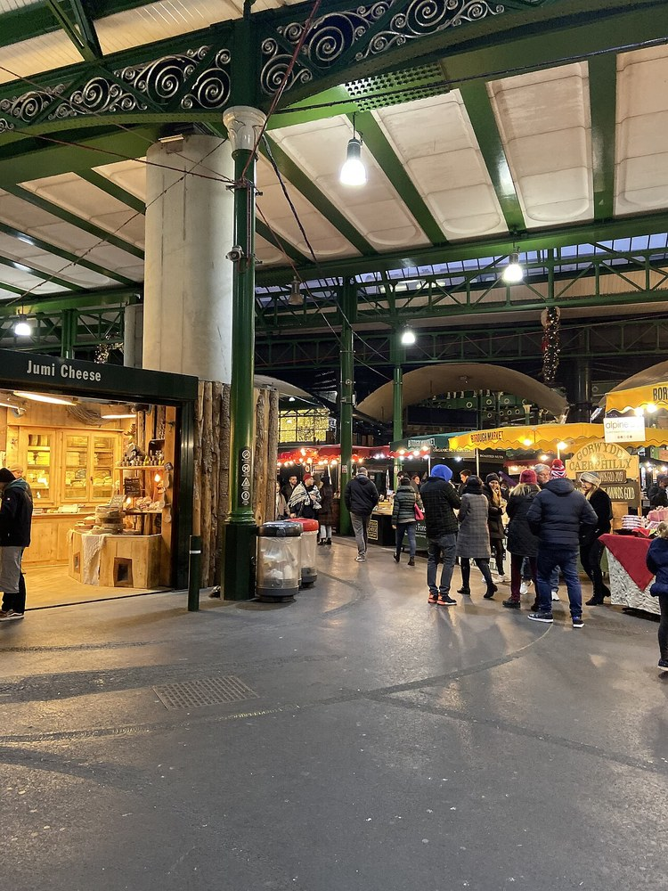
Jeong seolah, CC0
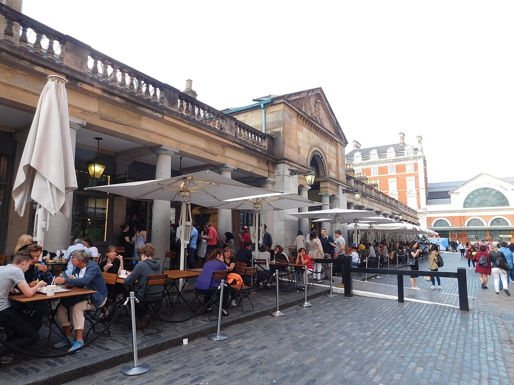
Wikimedia Commons image
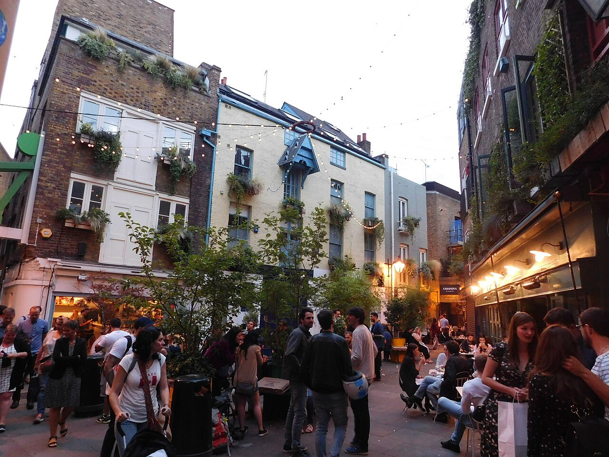
Paul The Archivist, CC BY-SA 2.0
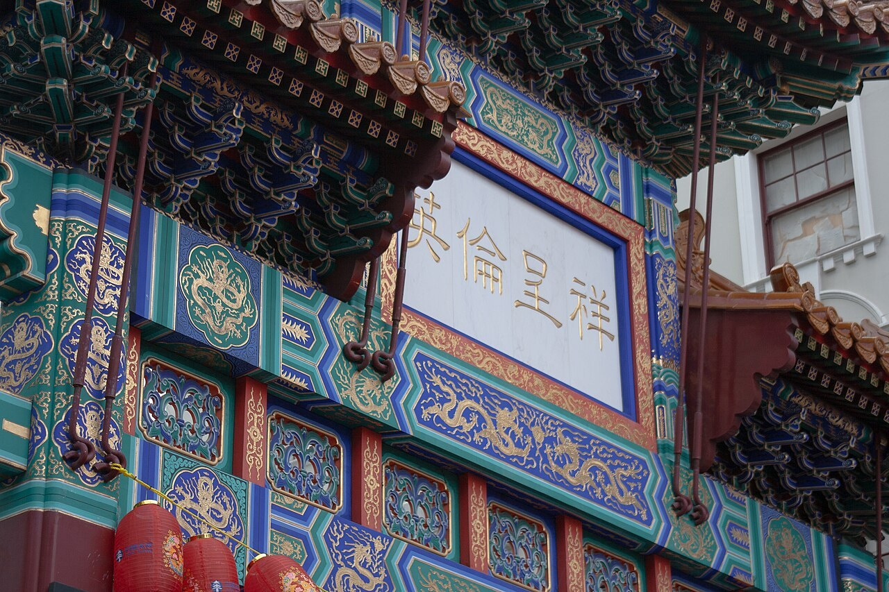
Wikimedia Commons image
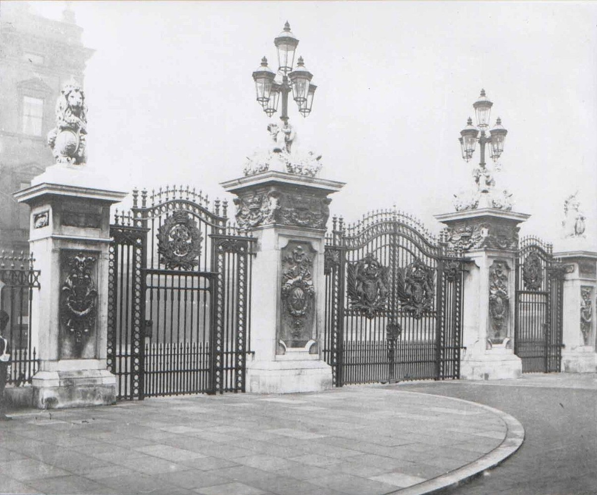
Wikimedia Commons image
Wikimedia Commons image
Jim Linwood, CC BY 2.0